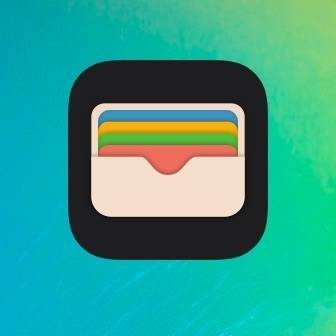
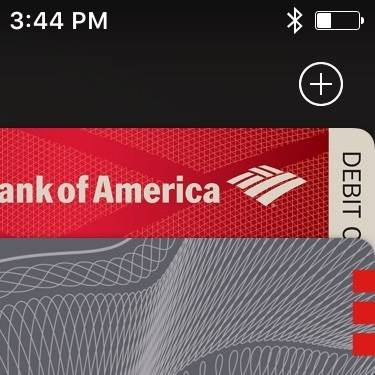
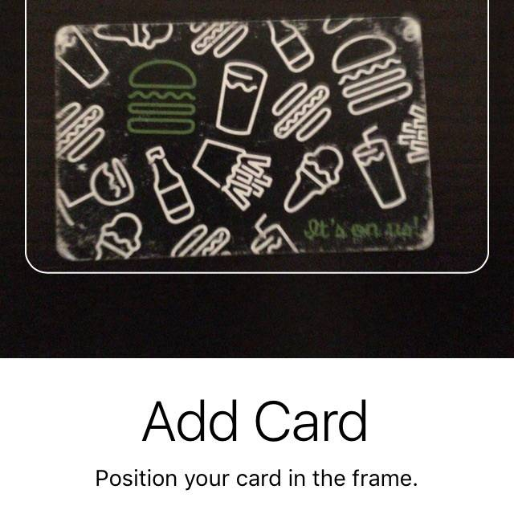
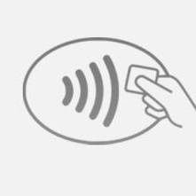

How To Set Up Apple Pay
If the new slow clunky chip cards have got you down, if you feel like paying at the grocery is harder than it used to be, if you think you’ll snap if the cashier rolls his eyes at you one more time, maybe it’s time to try Apple Pay. Inspired by: http://www.wsj.com/articles/chip-card-nightmares-help-is-on-the-way-1470163865?mod=trending_now_3
-
1: Take out your credit or debit card.
-

2: Open the "Wallet" app on your iPhone.
-

3: Tap the (+) button in the top-right corner.
The camera comes on.
-

4: Aim your phone at your card so it lines up with the guide.
This is a shake shack gift card but you should use a real credit card instead.
-
5: Follow the steps on-screen to verify the card.
The exact process varies by bank. For my Bank of America cards I get a text message with a code. For my American Express they called me.
-
That's it. You're ready to pay with your phone.
-
Now at the store, just hold your phone against the credit card terminal and rest your finger on the fingerprint reader.
If the terminal supports mobile payments, you'll see a picture of your card appear along with the fingerprint icon. After a second or two it will beep confirmation and you're done.
-
(It takes a little getting used to, especially with the social pressure of the line. You might want to practice somewhere you know it is accepted.)
-

Note: Most stores that accept Apple Pay don't actually have a sign anywhere. You will usually see an icon like this. But some terminals work even without the icon. In a vast majority of cases if their terminal has a chip card slot it will also take Apple Pay.
And it only takes a second to check. Just hold your phone to the terminal once it's ready to take payment. If you don't see your card pop up, then you'll know it's not supported and you can pull out the plastic card and fight the chip card battle.
-
~~~Answers To Common Questions~~~
-
Apple Pay does not require internet access or data service to use. It'll work just fine even if you're in the middle of nowhere with no service. All communication is between the phone and the terminal.
-
Paying with Apple Pay is much more secure than using a swipe card. Your phone knows your card information (stores securely) and it generates a one-time code to send to the terminal for each purchase. The store never knows your name, card number, etc so even if they're hacked (see Target) your account is perfectly safe.
-
You can use Apple Pay in apps like Uber and Lyft as well. You just use your fingerprint to authorize payment and don't have to save a card on file with each company.
-
You can add multiple cards to your wallet. When you do, you'll pick the "default" card that will be used when you hold your phone to the terminal. To switch cards, double-tap the home button instead.
-
You can also use Apple Pay from your Apple Watch. Add the card in the Watch App, then double-tap the side button to bring up the card, and tap to pay. You can pay with it even if you don't have your phone with you (like when you're out exercising).
-
Bank of America is rolling out ATMs that work with Apple Pay. At my local bank I can withdraw money or make deposits without having to insert my card. I just hold my watch up to the ATM and then enter my PIN.